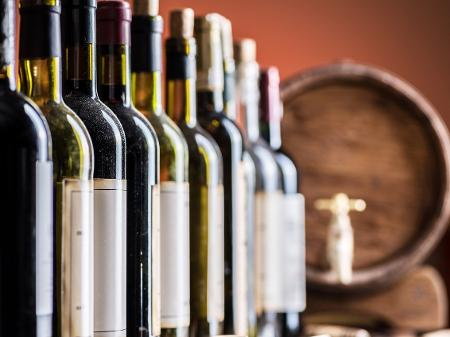

Bebidas

Para acompanhar seu churrasco, nada melhor do que uma bebida gelada. Nossa carta de bebidas oferece uma variedade de cervejas artesanais, vinhos selecionados, sucos naturais e refrigerantes. Consulte nossos sommeliers e encontre a combinação perfeita para o seu prato. Temos opções para todos os gostos e ocasiões.